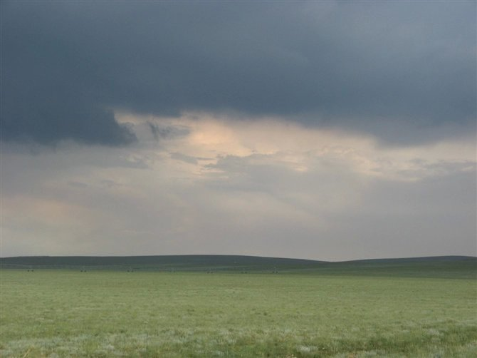
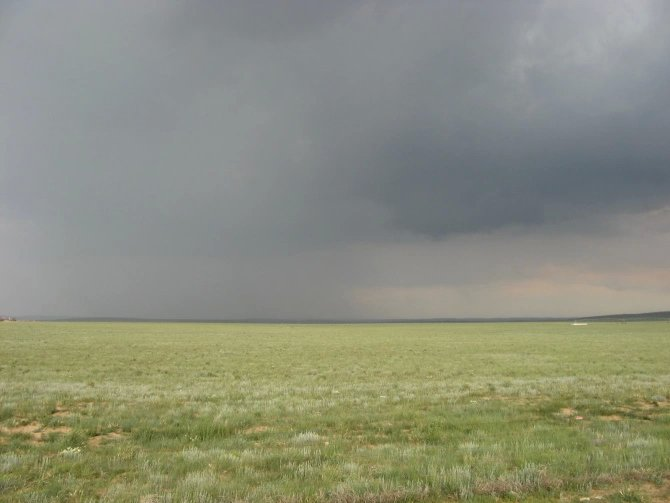
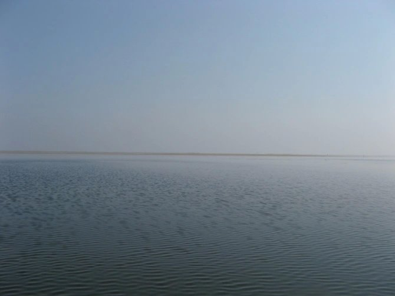
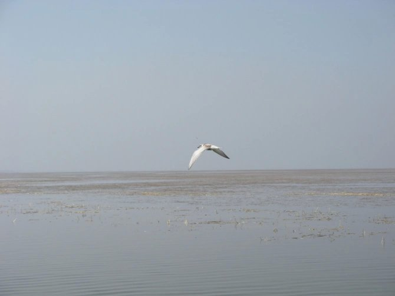
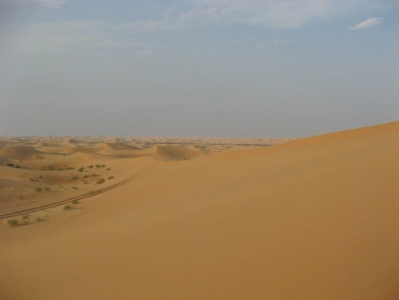
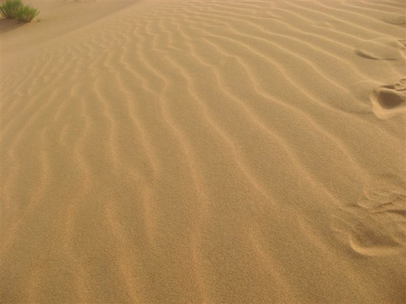
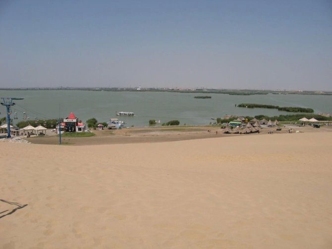
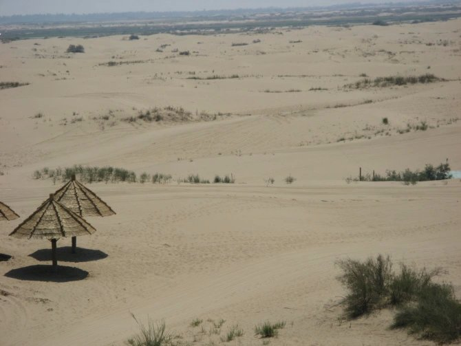

本以为这是一段极其短暂的旅程，可后来证实的事实却否定了这一点。目的地是内蒙。
我和父亲提前一天（16号）赶去了郑州，准备搭乘17号早上郑州至包头的火车。坐无座的火车赶到郑州，我对此已经习惯，毕竟这并不是特别漫长，只两个多小时而已。好久没有坐火车了，突然间感到有点不自然，到郑州时已是晚上十点多了，鉴于是与父亲同行，我便没有提议去那种“比什么什么更便宜的地方”——哪敢啊！于是在郑州火车站附近找到了一家宾馆休息下来，由于疲累，我简单洗漱后便倒头就睡了，期盼明天在火车上可以“精神抖擞”，顺便读点东西。计划仅是如此，没有多想。
这一夜倒是过得很快，一觉醒来已是第二天早上八点，没有了昨日的疲惫，但满身仍笼着一股莫名的混沌。或许累倒不算什么，至少还能够让人清醒。事实上，又不只你一个人累，疲于奔命的人太多了，倒不稀罕，像我这样脑子不清醒的人倒显得宝贵的多，不是么？~-~
直到第二天早上我从小姨的手中接到火车票，我才明白，我该受苦了。我对着小姨苦笑了一下，又看了看票上写着的“无座”二字，心是“唰”的一下凉了……毕竟是22个小时的旅程嘛！！！
我们去超市买点东西，至少要够一天一夜肚子消化的吧……
站里头总是意料之中的拥挤，像我这种“斯文人”就有点招架不了了。当然，这只是我不愿坐火车的原因之一。
火车上幸好有空调，要不一定挂的更惨……到车上最大的任务就是补票，至少要补上北京到包头的票吧，这样还能满足一个晚上的休息。但，任务仍是相当的艰巨……
有太多事情让人无奈了，对此我已渐渐习惯，我还年轻，人生中还有太多未曾品尝的辛酸。记得以为朋友的空间的心情中只写了一个字——“等”，倒是挺意味深长的。我想也许这正是我现在应该做的吧。还有一点我想说，那就是，我需要摆脱时间的纠缠。我不得不想尽办法去消磨生命中无聊的时光，坐火车是这样，活着也是这样。忙碌，即使疲累，也能让人得到一些充实的感觉。还是跑来跑去的让人满足，至少还可以知道自己还踩在这片让人感到踏实的土地上……
这是我第二次吃到这种菜——洋葱炒豆腐，我甚是诧异。当我们不得不在火车上餐车“买”个座，我们得到了一顿晚餐。想想那些东西我都无语。这是我继去淮阳吃到这种菜后第二次“有幸”品尝到，也许是我太孤陋寡闻了吧。
最后的事实证明了补票是多么的困难。于是我们便安心的在餐车“买座”来坐喽。又买了一顿夜宵，可以度过一夜的那种。这分明是黑人嘛！可无奈，无座的人都是被逼出来的……
沿途经过的一站我必须得提一下——北京。记得有位山大录取的朋友就特别想去北京，最后却也未能如愿，而我却歪打误撞的录取到了一所北京的大学。虽本不如我所愿，但我也只好眼睁睁的看着自己被残忍的录取到了那个学校……可这也许是我这种情况下所能达到的最好的了，我不得不承认。
今年本就不是我的幸运年，我对此默默接受。
19号到包头的第二天我遇到了太多好玩又好笑的事。最早的一件是关于包头要申请文明城市的事。我因此没有吃得上早饭！！这里的早点一条街全都关了门，太无语了，这样居然“不文明”！那干脆就不吃了，免得自己失去“文明人”的美称。还有一件是有关下雨的，听说这里一年到头就下不几场雨，而偏偏我就赶上了几场阵雨……
下午我们就驱车去了大草原，名曰“希拉穆仁”。到时已是傍晚，又伴了一点毛毛雨。
下车后我才明白，我抵达了向往许久的大草原，这里可真是凉快呵！辽阔的大草原让我顿生敞亮之感，仿佛那个我突然置身世外。我有点麻木了，好似失去知觉一般。彼时的我仿似只能感到习习凉风，以及满心快意。辽阔的草原，墨绿的草，与天交际于模糊的远方。远远的那里还是草吧，尽管我心想不是。或者，这些只是骗人的假象，它用绵延骗过你我的眼球，高兴地看着我们一群人高兴……


草原还是一样的草原，只是不像想象中的那样茂盛，草是捎带枯黄的，不是墨绿的。但，我能向自然要求让它变成我想要的模样吗？
晚上我们便住在了草原上，在一场许多人参与的酒席之后。酒席是父亲的同学聚会的酒席，一群人在蒙古包里喊着闹着，用酒精麻痹自己，甚至包括我自己。宴席中有一件特别“好玩”的事。唉！那是本人犯下的错，一个妹子哦，我也不想再大书特书，我做的太不对了。事后突然有点”XX”的感觉，尽管我对她人说：“明天我就会忘记所有今天我所做的事。”或者，这在当时只是一个借口？
20号早上，顶着持续眩晕的脑袋起床了。突然间我又领悟到，“羟基乙烷”居然比山丘的锤儿还性，持续眩晕效果超强……早饭吃一点，我和父亲以及父亲的一位同学准备去呼市，与那一群人分离。又是在车上“休息”很久，我又发现有时坐车很久也是一种痛苦的事……
人说旅途是要欣赏沿途的风景，但如果旅途太长太久，我想我那欣赏美的眼睛早就审美麻木了……
在呼和浩特转了许久下午便去了临河，既是巴彦淖尔市。记得她人的家就在这。不说了……
唉！
叹息！
晚上在临河又见了几个人之后，我就有预感这次旅行就要结束了。果然，我预感错了……
21号我们在上午到了乌梁素海，“几乎只是一点水而已”（有点夸张），不过在这里就是可以叫做“海”了（在我们这里只能叫做“大湖”的）。不过，人家也挺珍惜的，毕竟不像我们中原这里嘛，我也就不说啥了。我们在“海”中坐快艇兜了一大圈。景色挺不错的，有水有树，完全不像是一幅塞北风景。也许许多地方都是如此，那沙漠里不还有绿洲呢嘛！在这片海上逗留了一圈后，我们决定离开。


接下来的事，我有点蒙了。记不得了。
22号我们来到阿拉善盟的左旗。我们赶过去的时候，路途大概有六百公里。其间，我总共看到了三辆车，太无语了，人口差距太大了！！阿拉善总共有二十七万平方公里，而人口却只有二十万左右，一人平均一平方公里还多一点。于是，我从那时起开始考虑如果我有这么大的地盘我会做什么……果然是边塞，好不荒凉！但走进一个城市，却突然有种貌似窒息的感觉，太过突兀了……
既然是边塞，去沙漠就是理所当然。然而，这却成了另一个我本没有想到的意外……
我们驱车去月亮湖，这是旅途中突然加上的，本来不知道会是这样。但意外总是如此，给人突如其来的惊喜或是伤悲。我们赶车赶了大概两个半小时才到达去月亮湖的中转站，换乘了专门用于沙漠探险的车辆，向着大漠深处出发了。一出中转站车就驶入了茫茫沙海，看到一望无际的滕格里沙漠，连绵起伏的沙山在午后阳光的照射下呈现出高贵的金黄色。我们体会了沙海冲浪的感觉，汽车在沙海中左冲右突，忽而冲上陡陡的沙坡，忽而掉头向下俯冲，甚是刺激。还好，我在去之前就做好了心理准备，面部一直微带笑容，驾驭着这跌跌撞撞的刺激完成了十五公里的沙海冲浪。下车时还失神在冲浪的我一直很久没有缓过来神，神经一直兴奋着，享受这份目睹沙漠的快感……
很快到了湖边，反倒显得无趣，心里仍是惦记着刚才的那一幕幕惊心的场面。也许是屡见不鲜的缘故了吧，我们总是对那些没有涉足的地方充满好奇，而对那些“熟视”的东西“无睹”……人之常情嘛。不过天、沙、水、藻构成的蓝黄青绿的线条煞是优美，绝对是天成的美景，让人舒心，让人惊奇！据说这里湖的形状酷似中国地图，但由于没有俯瞰的条件，也就不能证实……
回来时，我们像又要途经大漠走入凡世一般。途中，我们停下车欣赏一下美景。我用相机记录下来这漫天沙的一幕，毕竟这又将成为一件值得铭刻的记忆。


在这里，我的心情好似又解脱了一遍，灵魂又释放了一通。大草原与大沙漠，同样的浩瀚与伟岸，一个满是绿绿的生命，另一个却仅是黄色的死气沉沉……
23号早上我们穿越宁蒙交接抵达银川，我知道这里就是我们回家的火车始发的地方。步入宁夏这个省时，我突然有中莫名的激动，我本来早可以在这里做一些事情的，最后却被延迟甚至可以说是被省去。也许我只是前世与她有一段尘缘，但今生再续一段也未必不可，不是么？但中午，我们仍是赶往沙湖。人们一贯认为来宁夏就得到沙湖看看，毕竟是5A级的景区嘛。下午在沙滩上走了大概三十分钟，看了个大概，不过是湖旁边有“一大堆”沙子而已。也许是我对昨天的沙漠仍“耿耿于怀”吧，对此突然有点小视，或者说是漠视……而且，就是那可恨的三十分钟，让我那本来只有2B的皮肤突然间变成了4B！！！我回来后就决定了，要开水泡毛巾，整天敷面度日，以期“白肤”……
…o(∩_∩)o…


几天下来，我已疲累，只想回家。我突然间明白到漂泊之苦，开始感激起自己有个安稳的家，那个可以得到温暖与保护的地方。
晚上八点的火车，七点赶到火车站，仍是想象中的拥挤。但，我对此已丝毫没有感觉一样，好似我已消除浮躁，感悟到了一些净化心灵的美好。
但终归是有一点遗憾，没有亲眼目睹一代天骄成吉思汗陵墓的浩大与辉煌，去领会这位英雄当年的恢宏的气势……
其实，这只不过是一次简单的旅行。人生嘛，就是这么样，简单的一段旅程。的确，我本可以简简单单的笑着闹着，不去考虑那些让人伤感的事。可是旅途中我突然遇到太多人太多事，而且我发现它们值得我去这样为之伤心，甚至是流泪。我只是想做一个自由的人，没有束缚，也许做一些值得自己去做而且自己愿意去做的事倒是给自己最好的礼物……